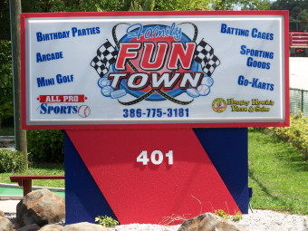
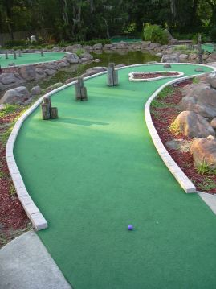

| F:
Family Fun Town 401 S. Volusia Ave, Orange City
(west side of 17-92)
(386) 775-3181, web site
 | 
| Price: $7 Number of Courses: 1 Upkeep: B Originality: B Hole-in-One Difficulty: Medium Par Difficulty: Easy Music: None
This is our home course, so we have played dozens of times. While there is only one course, there are several cups for each hole, most of which are covered with movable rocks, so it is a different course every time you play. Some holes have multiple cups open, so you can take your choice. There are a good mix of different themes, and even a practice hole. The greens have been redone and are well maintained, but the putters are old. There are also batting cages, go-carts, and an extensive arcade. |